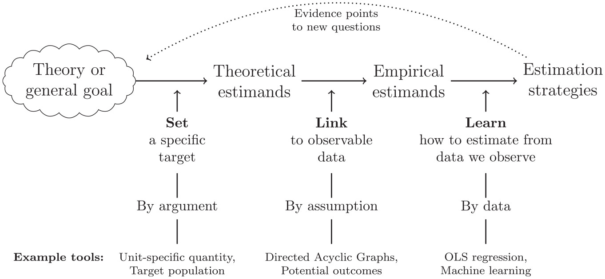
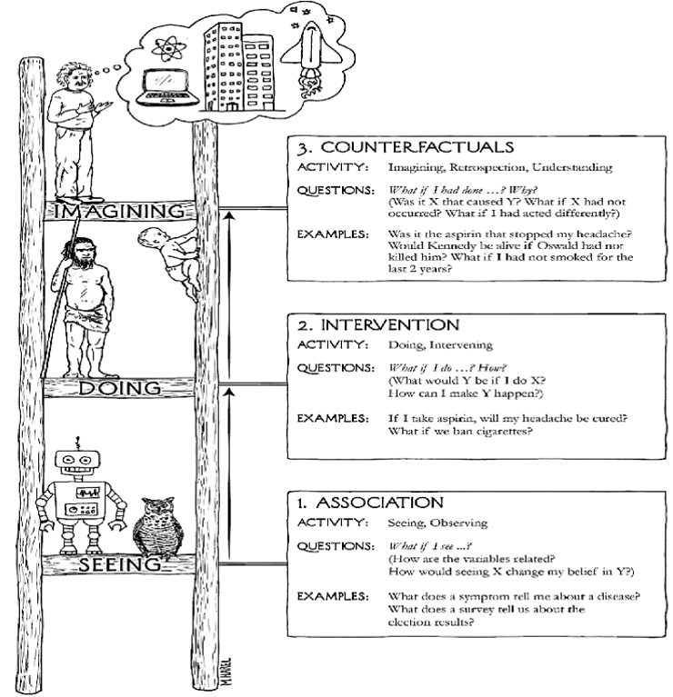
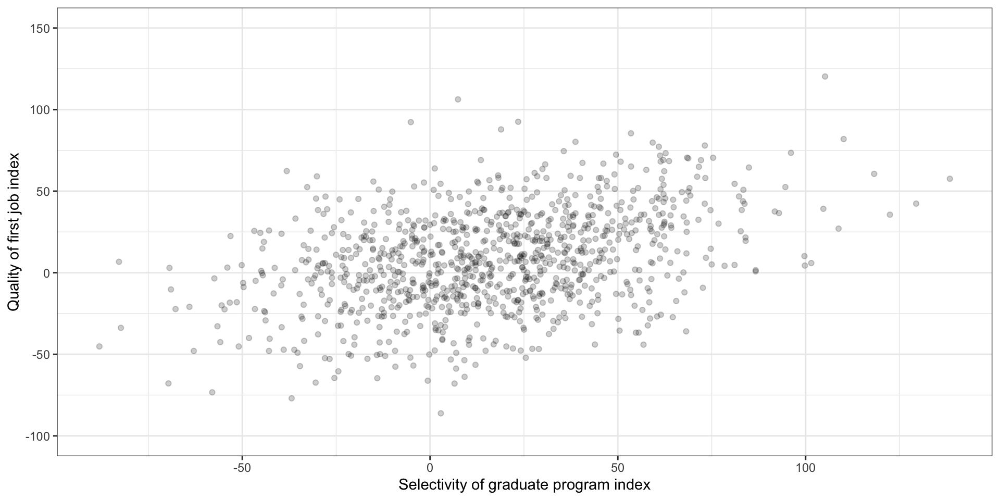
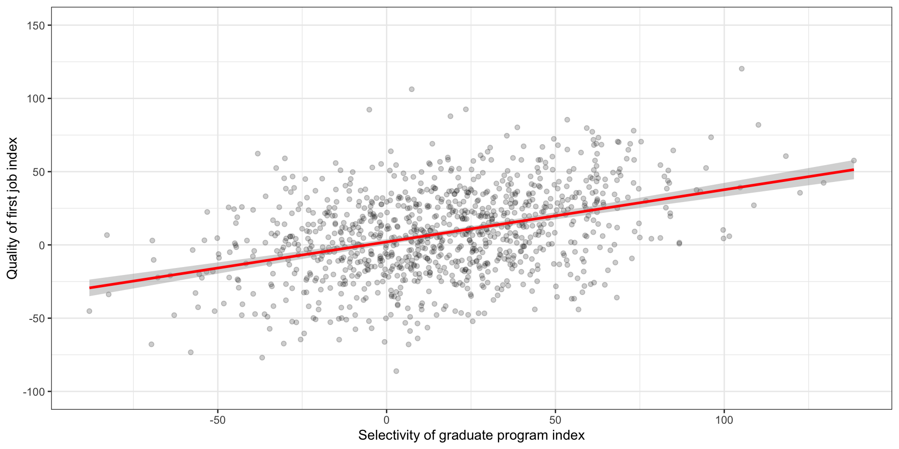
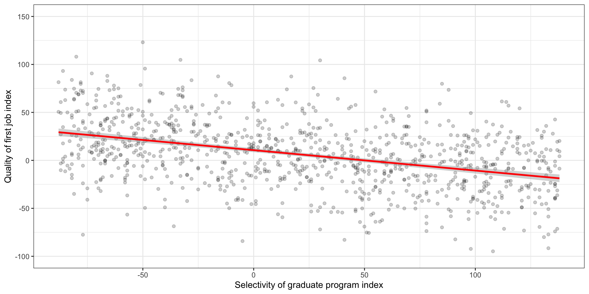
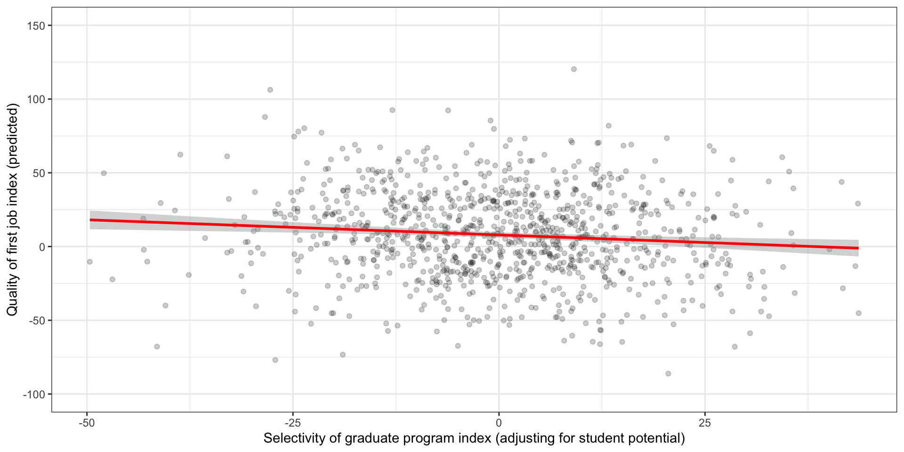
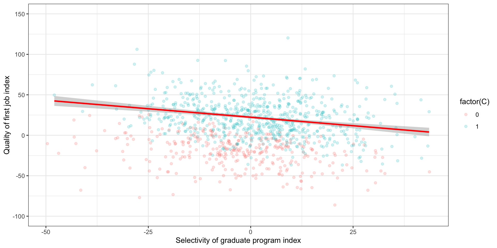

Quantitative Methods – Human Sciences
October 14, 2026
Motivation
Why should we care about causal inference?
The social sciences are experimenting what some authors have described as the rise of “causal empiricism” (Samii, 2016), a “credibility revolution” (Angrist and Pischke, 2010), or simply a “causal revolution” (Pearl and MacKenzie, 2018)
In artificial intelligence/ML, causality have been deemed “the next frontier” and “the next most important thing”
The enormous progress in the last decades has been facilitated by the development of mathematical frameworks that provide researchers with tools to handle causal questions: Potential Outcomes and the Structural Causal Model
What should you expect from this class?
This class is designed as a first course in causal inference, so we can focus only on a few things:
Familiarize yourself with the most widely used causal inference frameworks
Understand the role of randomisation to tackle causal questions
Use potential outcomes and the do-operator to formalize causal estimands
Use directed acyclic graphs (DAGs) to encode qualitative assumptions
Derive identification results and testable implications from a DAG
Assess the plausibility of different identification strategies applied to real problems
But, first: What is your estimand?
Researchers, at least social scientists, tend to formalize their effect of interest as regression coefficients (i.e., their hypothesis are formulated within a statistical model)
Potential outcomes offer a way to formalize what we mean by a causal effect outside any statistical model. Graphical models provides a way to formalize our assumptions without parametric restrictions.
This allows us to clearly separate what do we want (a certain estimand), what needs to be true so we get what we want (identifying assumptions), the statistical machinery to transform data into an answer for our question (an estimator), and the particular answer we get (our empirical estimate).
But, first: What is your estimand?

What is causal inference about?
Intuitions about causality
Have you heard any of these before?
“Correlation does not imply causation”
But can we go from one to the other?
“No causation without manipulation”
Then what about race or gender?
“Causal inference is a missing data problem”
Or is it the other way around?
“For causal inference, design trumps analysis”
But what do we mean by design? And analysis?
Statistics/ML vs Causal Inference
Statistics/ML
- Passive observation of the data generating process
- Estimand: Joint probabilities, CEF \[P(Y,X)\] \[E(Y|X=x)\]
- Focus on asymptotics / out of sample prediction
- Estimation problem: variance-bias tradeoff
- Pearl: “deep learning is just curve fitting”
Causal Inference
- Prediction under interventions on the DGP
- Estimand: interventional quantities \[P(Y|do(x))\] \[E(Y|do(x)) - E(Y|do(x'))\] \[= E(Y_x) - E(Y_{x'})\]
- Identification problem: consistency (infinite sample)
- Estimation problem: in general, focus on bias over variance (but changing)
The ladder of causation

The ladder of causation
| Estimand | Activity | Field/Discipline | Questions | Example |
|---|---|---|---|---|
| \(\mathbf{P(Y \vert X)}\) | Seeing, Observing | Stats, Machine Learning | What would I believe about Y if I see X? | What is the expected income of a college graduate in a given field? |
| Estimand | Activity | Field/Discipline | Questions | Example |
|---|---|---|---|---|
| \(\mathbf{P(Y \vert do(x))}\) | Doing, Intervening | Experiments, Policy evaluation | What would happen with Y if I change X? | How would income levels change in response to college expansion? |
| Estimand | Activity | Field/Discipline | Questions | Example |
|---|---|---|---|---|
| \(\mathbf{P(Y_x \vert x',y')}\) | Imagining, Retrospecting | Structural Models | What would have happened with Y have I done X instead of X’? Why? | What would have my parents’ income been, have they graduated from college, given that they didn’t go? |
But, is doing really that different from seeing?

Is doing really that different from seeing?
Let’s imagine an example: we want to know the effect of the selectivity of the graduate program a student attends on the quality of their first job after graduation

Is doing really that different from seeing?
Then, let’s see what story a simple linear regression would tell
Call:
lm(formula = Y ~ X, data = data)
Coefficients:
(Intercept) X
2.0391 0.3565 However, we know that the true effect is negative!

Is doing really that different from seeing?
What if we instead randomize students to different programs?
Call:
lm(formula = Yexp ~ Xrand, data = data)
Coefficients:
(Intercept) Xrand
10.6238 -0.2126 
Now we can see the true effect!
Is doing really that different from seeing?
Can we fix the observational comparison by adjusting for \(W\)?
Call:
lm(formula = Y ~ X + W, data = data)
Coefficients:
(Intercept) X W
0.07793 -0.20567 0.42104 
Is doing really that different from seeing?
Where are we getting the data from?
Imagine we collected the data by looking at programs’ websites, where they post the job market outcomes but
- more selective programs tend to report more
- students will report to their programs based partially on the quality of their job offers
Call:
lm(formula = Y ~ X + W, data = subset(data, C == 1))
Coefficients:
(Intercept) X W
16.6189 -0.3868 0.3539 
The last piece was an example of so-called “selection bias”.


From causal methods to causal assumptions
From causal methods to causal assumptions
It is common to hear the idea that some methods are inherently causal: propensity score matching, IPW, instrumental variables, panel methods, and even machine learning
But there is nothing properly causal about a method (i.e, an estimator, an algorithm, a formula)!
What makes our conclusions causal is the assumptions we make, whose plausibility is justified (or not) on a given research design
From causal methods to causal assumptions
In this first lecture, we are going to study the formal language that allows us to clearly and transparently state both our quantities of interest and our assumptions
Then we will see this framework in action, to understand how does it work in the context of randomised studies
We should be able to understand why RCTs are often described as the “gold standard” for causal inference
The First Commandment of Causal Inference
(by Chad Hazlett)
Thou shalt not blindly apply identification strategies as if the procedure makes your results causal
Identification strategies are about assumptions, not tools:
learning tools is important, useful, and fun
but the tool you use doesn’t make your result causal, your assumptions do
most of your effort should go into understanding and communicating whether your assumptions are credible
Corolary: Never say “my estimate is causal because I used (.)”
Where (.) = matching, IPW, IV, RDD, DML, whatever
Potential Outcomes
Neyman, Neyman-Rubin, or Rubin Causal Model (?)
POs were introduced by Neyman (1923) in the context of experimental design. They remained only used in that context for decades!
Imported and extended by Donald Rubin for observational studies (c. 1974)
They are really great to clarify what do we want to know (estimand)
This includes identifying reasons for discrepancies between what we observe and our estimand (bias)
They are great to formalize what needs to be true for our estimand to be identified with a given estimator (assumptions)
- They are not-so-great to assess if our assumptions are plausible or defensible (more on this later!)
Notation
To think causally, we need to go beyond what we can observe. We need to hypothesize about possible worlds (what ifs)!
To do this, let’s postulate the existence of potential outcomes
Let’s start with some definitions:
\(Y\) is the outcome variable as we observe it
\(D\) is the variable whose effect we want to study (treatment, exposure)
\(Y_d\) is the potential outcome when we set \(D=d\). For example, when \(D \in \{0,1\}\):
\(Y_1\) is the potential outcome under “treatment”
\(Y_0\) is the potential outcome under “control”
Notation
You will find a lot of equivalent notations for potential outcomes. It could be confusing, but it is good to get practice working with different variants
\[Y(d) = Y_d = Y^d\]
Read it like this:
The value that the variable \(Y\) would take if we were to set/manipulate the variable \(D\) to the value \(d\).
What is the fundamental problem of causal inference? (Holland, 1986)
Can you ever observe any of those potential outcomes?
“Causal inference is a missing data problem”
Notation
Consistency (also known as SUTVA): \[D = d \rightarrow Y = Y_d\]
For the binary treatment case, we have: \[Y = DY_1 + (1-D)Y_0\] (a.k.a., “switching equation”)
What are the assumptions built in this notation? What type of dependence are we ruling out?
Causal estimands
The first thing that potential outcomes allow us to do is to formalize the causal effects we may want to estimate.
Some frequently invoked estimands are the following:
Individual treatment effect \[ITE = \tau_i = Y_{1i} - Y_{0i}\]
- How can we read this expression?
- Can we ever estimate it from data?
Causal estimands
The first thing that potential outcomes allow us to do is to formalize the causal effects we may want to estimate.
Some frequently invoked estimands are the following:
Average treatment effect \[ ATE = E[\tau_i] = E[Y_{1i} - Y_{0i}]\] \[= E[Y_{1i}] - E[Y_{0i}] \]
- How can we read this expression?
- Can we ever estimate it from data?
Causal estimands
The first thing that potential outcomes allow us to do is to formalize the causal effects we may want to estimate.
Some frequently invoked estimands are the following:
Average treatment effect on the treated \[ ATT = E[\tau_i|D_i=1] = E[Y_{1i} - Y_{0i}|D_i=1]\] \[= E[Y_{1i}|D_i=1] - E[Y_{0i}|D_i=1] \]
- How can we read this expression?
- Can we ever estimate it from data?
Causal estimands
The first thing that potential outcomes allow us to do is to formalize the causal effects we may want to estimate.
Some frequently invoked estimands are the following:
Average treatment effect on the controls \[ ATC = E[\tau_i|D_i=0] = E[Y_{1i} - Y_{0i}|D_i=0]\] \[= E[Y_{1i}|D_i=0] - E[Y_{0i}|D_i=0] \]
- How can we read this expression?
- Can we ever estimate it from data?
Causal estimands
The first thing that potential outcomes allow us to do is to formalize the causal effects we may want to estimate.
Some frequently invoked estimands are the following:
Conditional average treatment effect \[ CATE = E[\tau_i|X_i=x] = E[Y_{1i} - Y_{0i}|X_i=x]\] \[= E[Y_{1i}|X_i=x] - E[Y_{0i}|X_i=x] \]
- How can we read this expression?
- Can we ever estimate it from data?
Checking intuitions
Let’s assume \(D\) (the exposure) is defined as “doing the required readings before lecture”, and \(Y\) is “understanding what is going on”. Then,
\[E[Y_{1i}] = E[Y_i | D_i=1]?\]
Let’s try to parse this out:
What is the individual quantity we are looking at?
What is the population we are targeting?
How would the observed \(Y_{1i}\) (for those with \(D_i=1\)) compare to the \(Y_{1i}\) you don’t see?
When would these two quantities be equivalent?
Checking intuitions
Let’s assume \(D\) (the exposure) is defined as “doing the required readings before lecture”, and \(Y\) is “understanding what is going on”. Then,
\[E[Y_{1i}] = E[Y_i | D_i=1]?\]
If we throw \(D_i\) at random in this room:
How would the observed \(Y_{1i}\) (for those with \(D_i=1\)) compare to the \(Y_{1i}\) you don’t see?
What about the \(Y_{0i}\)?
Can we estimate \(E[Y_1]\) and \(E[Y_0]\)?
Checking intuitions
Let’s assume \(D\) (the exposure) is defined as “doing the required readings before lecture”, and \(Y\) is “understanding what is going on”. Then,
\[E[Y_{1i}] = E[Y_i | D_i=1]?\]
Suppose \(Y_{1i} = Y_{0i}\) for everyone, and I can see them all:
What happens if I give \(D_i=1\) more often to those with higher \(Y_1\)?
How would the \(Y_1\) you see vs the \(Y_1\) you don’t see relate?
What would \(E[Y_i|D_i=1] - E[Y_i | D_i=0]\) tell me?
Short activity (3 mins)
Take a moment to think about your own research:
- What causal question is relevant for you to study?
- Can you formulate it using potential outcomes?
- What is the contrast of interest?
- Averaging over which sub-population?
- What are the assumptions your are making in this formalization?
The Science Table
One advantage of PO is that we can treat them directly as random variables!
So, everything we already know related to probability manipulation still applies here.
The basic calculation device (usually implicit) for that matter is the science table.
Basically, the full schedule response of the potential outcomes under different treatment conditions
| Unit | \(D_i\) | \(Y_i\) | \(Y_{ai}\) | \(Y_{bi}\) | \(\tau_i\) |
|---|---|---|---|---|---|
| 1 | A | 1 | 1 | 1 | 0 |
| 2 | A | 0 | 0 | 0 | 0 |
| 3 | A | 0 | 0 | 1 | -1 |
| 4 | A | 1 | 1 | 0 | 1 |
| 5 | A | 1 | 1 | 1 | 0 |
| 6 | B | 0 | 1 | 0 | 1 |
| 7 | B | 0 | 1 | 0 | 1 |
| 8 | B | 0 | 0 | 0 | 0 |
| 9 | B | 1 | 0 | 1 | -1 |
| 10 | B | 1 | 1 | 1 | 0 |
Average Treatment Effect
Imagine we want to compare two educational programs, \(a\) and \(b\).
We are interested in the employment status of their graduates after a year (\(Y\))
The causal effect of the program would be the comparison of the potential outcomes \(Y_{ai}\) and \(Y_{bi}\), for all units \(i\)
\[\text{ATE} = E(Y_{ai}) - E(Y_{bi})\] \[(6/10) - (5/10) = \mathbf{\color{blue}{0.1}}\]
| Unit | \(D_i\) | \(Y_i\) | \(Y_{ai}\) | \(Y_{bi}\) | \(\tau_i\) |
|---|---|---|---|---|---|
| 1 | A | 1 | 1 | 1 | 0 |
| 2 | A | 0 | 0 | 0 | 0 |
| 3 | A | 0 | 0 | 1 | -1 |
| 4 | A | 1 | 1 | 0 | 1 |
| 5 | A | 1 | 1 | 1 | 0 |
| 6 | B | 0 | 1 | 0 | 1 |
| 7 | B | 0 | 1 | 0 | 1 |
| 8 | B | 0 | 0 | 0 | 0 |
| 9 | B | 1 | 0 | 1 | -1 |
| 10 | B | 1 | 1 | 1 | 0 |
Difference-in-means
But we don’t observe all potential outcomes for all units!
Can we use instead the observational comparison as a proxy?
Let’s calculate the different in means across groups, based on the actual program each subject attended:
\[\text{diff-in-means} = E(Y_i|D=a) - E(Y_i|D=b)\] \[(3/5)-(2/5) = \mathbf{\color{red}{0.2}}\]
\[\color{red}{\text{diff-in-means} \neq \text{ATE}}\]
\(\color{red}{\text{But why???}}\)
| Unit | \(D_i\) | \(Y_i\) | \(Y_{ai}\) | \(Y_{bi}\) | \(\tau_i\) |
|---|---|---|---|---|---|
| 1 | A | 1 | 1 | . | . |
| 2 | A | 0 | 0 | . | . |
| 3 | A | 0 | 0 | . | . |
| 4 | A | 1 | 1 | . | . |
| 5 | A | 1 | 1 | . | . |
| 6 | B | 0 | . | 0 | . |
| 7 | B | 0 | . | 0 | . |
| 8 | B | 0 | . | 0 | . |
| 9 | B | 1 | . | 1 | . |
| 10 | B | 1 | . | 1 | . |
Sources of bias
\[E(\text{diff-in-means})\] \[= E(Y_i|D=a) - E(Y_i|D=b)\] \[= E(Y_a|D=a) - E(Y_b|D=b)\] \[= ATE +\] \[(E[Y_b|D=a] - E[Y_b|D=b])+\] \[(1-P[D])(ATT-ATC)\] \[= \mathbf{\color{blue}{0.1}} + \color{red}{0.2 + (0.5)(-0.2) = \mathbf{0.2}}\]
| Unit | \(D_i\) | \(Y_i\) | \(Y_{ai}\) | \(Y_{bi}\) | \(\tau_i\) |
|---|---|---|---|---|---|
| 1 | A | 1 | 1 | . | . |
| 2 | A | 0 | 0 | . | . |
| 3 | A | 0 | 0 | . | . |
| 4 | A | 1 | 1 | . | . |
| 5 | A | 1 | 1 | . | . |
| 6 | B | 0 | . | 0 | . |
| 7 | B | 0 | . | 0 | . |
| 8 | B | 0 | . | 0 | . |
| 9 | B | 1 | . | 1 | . |
| 10 | B | 1 | . | 1 | . |
Identification assumptions
We need the following condition to be true: \[ Y_d \perp\!\!\!\perp D \]
Do we meet that condition here? No! \[(Y_{ai},Y_{bi}) \not\!\perp\!\!\!\perp D\]
Because: \[P(Y_a = y | D=a) \neq P(Y_a = y)\] \[P(Y_b = y | D=b) \neq P(Y_b = y)\]
| Unit | \(D_i\) | \(Y_i\) | \(Y_{ai}\) | \(Y_{bi}\) | \(\tau_i\) |
|---|---|---|---|---|---|
| 1 | A | 1 | 1 | 1 | 0 |
| 2 | A | 0 | 0 | 0 | 0 |
| 3 | A | 0 | 0 | 1 | -1 |
| 4 | A | 1 | 1 | 0 | 1 |
| 5 | A | 1 | 1 | 1 | 0 |
| 6 | B | 0 | 1 | 0 | 1 |
| 7 | B | 0 | 1 | 0 | 1 |
| 8 | B | 0 | 0 | 0 | 0 |
| 9 | B | 1 | 0 | 1 | -1 |
| 10 | B | 1 | 1 | 1 | 0 |
Identification assumptions
What about including another covariate \(W\)?
Does the following condition holds? \[ Y_d \perp\!\!\!\perp D | W \]
Not quite either! But still “better” than before, right? right?
Let’s define: \[\text{CATE}_{w} = E(Y_a-Y_b|W=w)\]
and the estimator \(\widehat{\text{CATE}}_{w} =\) \[E(Y_i|X=a,W=w) - E(Y_i|X=b,W=w)\]
| Unit | \(D_i\) | \(Y_i\) | \(Y_{ai}\) | \(Y_{bi}\) | \(\tau_i\) | \(W_i\) |
|---|---|---|---|---|---|---|
| 1 | A | 1 | 1 | 1 | 0 | Quant |
| 2 | A | 0 | 0 | 0 | 0 | Quant |
| 3 | A | 0 | 0 | 1 | -1 | Qual |
| 4 | A | 1 | 1 | 0 | 1 | Quant |
| 5 | A | 1 | 1 | 1 | 0 | Qual |
| 6 | B | 0 | 1 | 0 | 1 | Qual |
| 7 | B | 0 | 1 | 0 | 1 | Quant |
| 8 | B | 0 | 0 | 0 | 0 | Qual |
| 9 | B | 1 | 0 | 1 | -1 | Qual |
| 10 | B | 1 | 1 | 1 | 0 | Quant |
Identification assumptions
\[\widehat{\text{CATE}}_{Quant} = \widehat{\text{CATE}}_{Qual} = 0.16\] \[\text{ATE} = \sum_w\text{CATE}_w P(w)\] \[\widehat{\text{ATE}} = (0.5)(0.16) + (0.5)(0.16) = 0.16\]
However, look a the true \(\text{ATE}_W\): \[\text{CATE}_{Quant} = -0.2\] \[\text{CATE}_{Qual} = 0.4\] \[\text{ATE} = (0.5)(-0.2) + (0.5)(0.4) = \color{blue}{\mathbf{0.1}}\]
| Unit | \(D_i\) | \(Y_i\) | \(Y_{ai}\) | \(Y_{bi}\) | \(\tau_i\) | \(W_i\) |
|---|---|---|---|---|---|---|
| 1 | A | 1 | 1 | 1 | 0 | Quant |
| 2 | A | 0 | 0 | 0 | 0 | Quant |
| 3 | A | 0 | 0 | 1 | -1 | Qual |
| 4 | A | 1 | 1 | 0 | 1 | Quant |
| 5 | A | 1 | 1 | 1 | 0 | Qual |
| 6 | B | 0 | 1 | 0 | 1 | Qual |
| 7 | B | 0 | 1 | 0 | 1 | Quant |
| 8 | B | 0 | 0 | 0 | 0 | Qual |
| 9 | B | 1 | 0 | 1 | -1 | Qual |
| 10 | B | 1 | 1 | 1 | 0 | Quant |
So, how do we know?
In general, we rely on extra-statistical assumptions about the data generating process to claim causal identification.
“No causes in, no cases out”
Nancy Cartwright
Is there a way to design an study in which we know, by design, that the needed assumptions hold?
| Unit | \(D_i\) | \(Y_i\) | \(Y_{ai}\) | \(Y_{bi}\) | \(\tau_i\) | \(W_i\) |
|---|---|---|---|---|---|---|
| 1 | A | 1 | 1 | . | . | Quant |
| 2 | A | 0 | 0 | . | . | Quant |
| 3 | A | 0 | 0 | . | . | Qual |
| 4 | A | 1 | 1 | . | . | Quant |
| 5 | A | 1 | 1 | . | . | Qual |
| 6 | B | 0 | . | 0 | . | Qual |
| 7 | B | 0 | . | 0 | . | Quant |
| 8 | B | 0 | . | 0 | . | Qual |
| 9 | B | 1 | . | 1 | . | Qual |
| 10 | B | 1 | . | 1 | . | Quant |
Randomised Experiments
Why randomisation?
If we want to predict under interventions, then the best way to do it is interveening!
Random assignment has been called the gold standard for causal inference: it guarantees the necessary assumptions for causal inference hold by design.
What is the difference between random assignment and random sampling???
Why randomisation?
When unfeasible, imagining a hypothetical experiment still offers a useful benchmark to assess the validity of causal claims, and even to clarify what do we mean by a particular causal effect.
Experiments come in many different flavors: lab, field, survey, and even quasi-experiments!
Here we will only scratch the surface of social science experiments: the idea is to get you interested and point you to the resources out there
Why randomisation? Intuition
Let’s go back for a second to the switching equation introduced earlier:
\[ Y = DY_1 + (1-D)Y_0 \]
Basically, the idea (somewhat counter-intuitive) is that:
Potential outcomes are fixed (\(Y_1\) and \(Y_0\) just exists out there)
The treatment’s \(D\) sole function is to “reveal” one or another!
Then, it is clear that, when \(D\) is randomly assigned, we get a random sample of both \(Y_1\) and \(Y_0\), allowing us to estimate the ATE!
Why randomisation?
(more formally)
We already said that we can identify the causal effect of \(D\) on \(Y\) if the treatment assignment is independent of the potential outcomes. Formally, when \[(Y_{d=1},Y_{d=0}) \perp\!\!\!\perp D\]
Why randomisation?
(more formally)
Recall the diff-in-means bias decomposition we reviewed earlier:
By consistency
\[E(Y_i|D=1) - E(Y_i|D=0) = E(Y_1|D=1) - E(Y_{0}|D=0)\]
Plus some algebra (explicit derivation in Morgan and Winship)
\[= E(Y_1 - Y_{0}) + (E[Y_{0}|D=1] - E[Y_{0}|D=0])+(1-P[D])(ATT-ATC)\]
Pause! What is the meaning of each term?
Why randomisation?
(more formally)
\[= E(Y_1 - Y_{0}) + (E[Y_{0}|D=1] - E[Y_{0}|D=0])+(1-P[D])(ATT-ATC)\]
Given ignorability of the treatment assignment, we can further simplify it as:
\[E(Y_1 - Y_{0}) = ATE\]
Forms of validity
Traditionally, researchers have argued about the validity of a study’s causal conclusion (and, more generally, about the validity of different research designs) based on the potential biases that pose threats to validity.
Check this amazing paper by Matthay and Glymour for a review.
Forms of validity
We reviewed the bias in the difference-in-means estimator: baseline differences (under the control condition), and differential response to the treatment (under the exposure condition).
But when we randomize an exposure, we know that who ends up in each treatment arm has nothing to do with their potential outcomes!
This is why we generally say that experiments are great for internal validity: among the people that participated in our study, we can rule out systematic sources of bias!
However, this does not imply that our results are externally valid, i.e., that they apply to people outside our study! We need further assumptions to move from one to another.
Types of experiments
Laboratory experiments: Usually conducted with a small sample (of undergraduate psychology students), many times involving games in a computer. Helpful for cognitive/behavioral questions.
Field experiments: In order to obtain more externally valid results, experiments conducted in the field (i.e., under real-world conditions) are the way to go. Definitely more expensive though. Audit studies are a particular type of field experiment.
Survey experiments: One can randomize treatment conditions in a survey to evaluate how participants change their responses based on certain stimulus. Vignettes and list experiments are examples of this approach.
(Bonus) Quasi-experiments: Researchers usually call quasi-experiments to real-world situations that offer as-if random variation in a treatment of interest. For example, earthquakes, change in laws, date of birth, etc.
Short activity (3 mins)
Sometimes it is hard to imagine an experiment that would be relevant for the type of questions we care about.
Some people even say (and I for sure partially agree!) that experiments tend to emphasize “small” versus “big” questions, promoting incremental/testable policies.
However, there are tons of examples of researchers using experiments to address important, big and difficult questions. Do you know of any example?
How to randomise?
We use randomisation not just for identification (ignorability), but also for estimation!
If we assume the potential outcomes are fixed, and the only thing that varies is the treatment assignment scheme, we can derive a permutation distribution and use it for inference.
How to randomise?
How much dispersion (i.e. uncertainty) is in our distribution will be affected by the level at which randomization (or, more precisely, the treatment) happens: is it at the individual level? or at a cluster/group level?
The more the aggregation, the more uncertainty. So why would we want to randomize at the cluster level?
How to randomise?
Conditional randomization (i.e., blocking) increases efficiency, when we have variables that are highly predictive of the outcome of interest
One extreme of this is randomization in matched pairs: for each pair of individual with similar covariates, we randomly assign one to treatment and one to control
Blocking
Similar to the intuition for stratified random sampling in the context of surveys, blocking may increase precision in experimental design
Precision gains are similar to increasing the sample size
Collect background information on covariates relevant to the outcome
Pre-stratify your sample, then randomise within blocks
This ensures that, with respect to the blocked factors, both treatment arms are identical
It is essentially the same as running a separate experiment in each strata
Blocking
For estimation, obtain block-specific effects, and average according to population shares. With \(J\) strata:
\[ \tau_{\text{block}} = \sum_{j=1}^{J} \frac{N_j}{N} \tau_j \] with variance:
\[V(\tau_{\text{block}}) = \sum_{j=1}^{J} \Big(\frac{N_j}{N}\Big)^2 V(\tau_j)\]
How to estimate?
Once we have random assignment, estimation is super easy!
All that matters is that your estimation procedure follows your (known) assignment rule
In other words: Estimate as you randomise!
A simple difference in means will recover the ATE
This is equivalent to running a bivariate regression (no controls)
With controls is a little trickier (see Freedman 2008 and Lin 2013), but more useful (increased precision)!
Your standard errors depend on your randomisation scheme!
- is assignment at the individual level?
- do probabilities vary by block?
- is randomisation conducted among clusters?
Covariate balance
When you randomise the treatment, pre-treatment variables will be (in expectation) balanced across treatment arms
This is usually a way to “check” if the randomisation step worked out correctly
However, one should be careful to not discard “unlucky” realizations in an arbitrary manner
Potential issues
In random-land, everything is perfect!
However, many things can go wrong in practice, threatenind internal validity:
Randomisation failure: for some reason, the physical procedure of assignment fails to be random (see Vietnam draft lottery)
Noncompliance: many times, participants fail to adhere to their assigned treatment status (one- or two-sided noncompliance)
Attrition and loss to follow up: even if randomisation is properly conducted and everyone adheres to the treatment, we may differentially lost participants in the post-treatment period!
Potential issues

Additional Resources
Online learning
Short activity
Think in a research question that you could possibly address using an experimental design:
What is your research question?
What is your estimand? (effect of what? on what? among whom?)
What type of experiment would you conduct? (lab? field? survey?)
What would be the level of your randomisation? (individual? cluster? why?)
What ethical considerations you should take into account for your experiment to be acceptable?
Potential Outcomes and Experiments